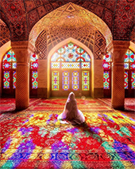

Pink Mosque History

The Nasir al-Mulk Mosque (Persian: مسجد نصیر الملک Masjed-e Nasir ol-Molk),
also known as the Pink Mosque (مسجد صورتی Masjed-e Surati), is a traditional
mosque in Shiraz, Iran. It is located in Gawd-i Arabān quarter, near Shāh Chérāgh
Mosque. It was built during Qajar dynasty rule of Iran.
The mosque includes extensive coloured glass in its facade, and displays other
traditional elements such as the Panj Kāse ("five concaved") design. It is named
in popular culture as the 'Pink Mosque',[1] due to the usage of a considerable
number of pink-colored tiles for its interior design.
The Pink Mosque was built during the Qajar dynasty, and is still in
use under protection by the Endowment Foundation of Nasir al Molk.
Construction began in 1876 by the order of the late Hassan Ali
Nasir al-Molk, one of the lords and aristocrats of Shiraz, the son
of Mirza Ali Akbar Qavam-ol-Molk
, the ruler of Fars and was completed
in 1888. The designers were Mohammad Hasan-e-Memār, an Iranian architect
who had also built the noted Eram Garden before the Nasir al-Molk Mosque
, Mohammad Hosseini Shirazi, and Mohammad Rezā Kāshi-Sāz-e-Širāzi.
(Wikipedia)